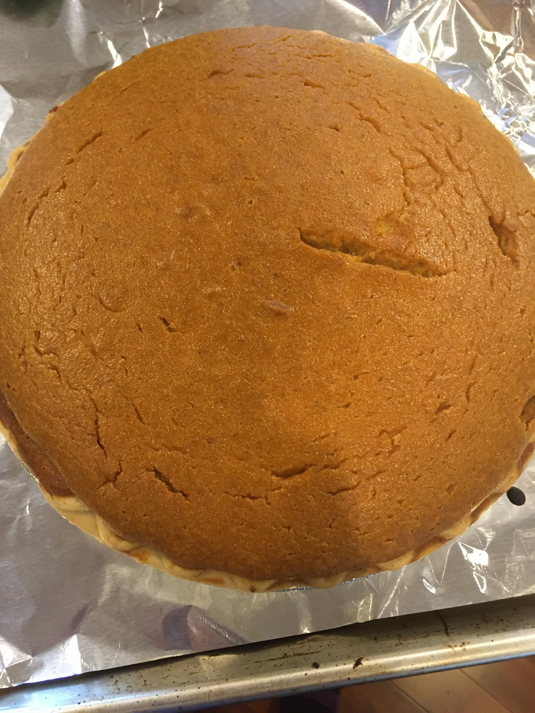

Pumpkin Pie
A must have for Thanksgiving and a go to for the Fall season! Everyone will be sure to call you the pumpking after this!
Ingredients
- Pie crust
- Can of canned pumpkin
- 1 1/2 cups of evaproated milk or rich cream
- 1/4 cup of brown sugar
- 1/2 cup of white sugar
- 1/2 teaspoon of salt
- 1 teaspoon of cinnamon
- 1/2 teaspoon of ginger
- 1/4 teaspoon of nutmeg or allspice
- 1/8 teaspoon of cloves (optional)
- 2 slightly beaten eggs
Instructions
- Preheat oven to 425°
- Mix all ingredients until well blended
- Pour the mixture into the pie crust
- Bake for 15 minutes at 425°
- Reduce oven temperature to 350°
- Bake for 45 minutes or until an inserted knife comes out clean
- Cool before eating and add whipped cream as preferred
Chef's Advice: Do not insert the blade near the center or you will risk overcooking the pie